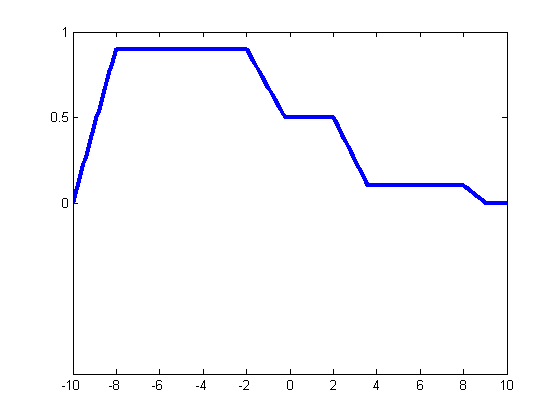
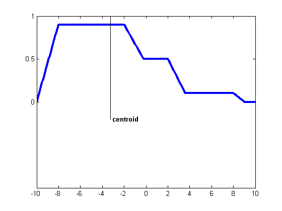
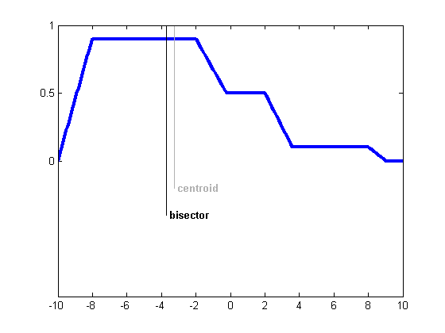
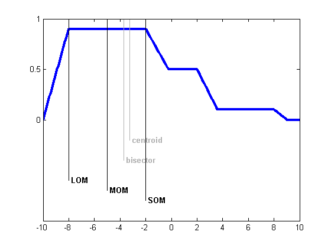
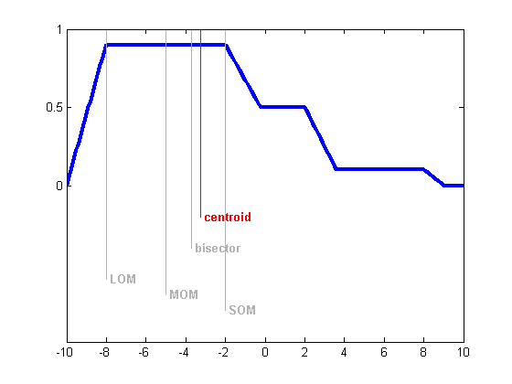

Display five defuzzification methods supported in the Fuzzy Logic Toolbox.
Suppose you have the following region to be defuzzified. What are some of the methods you might choose?
x = -10:0.1:10; mf1 = trapmf(x,[-10 -8 -2 2]); mf2 = trapmf(x,[-5 -3 2 4]); mf3 = trapmf(x,[2 3 8 9]); mf1 = max(0.5*mf2,max(0.9*mf1,0.1*mf3)); plot(x,mf1,'LineWidth',3); set(gca,'YLim',[-1 1],'YTick',[0 .5 1])
Centroid defuzzification returns the center of area under the curve. If you think of the area as a plate of equal density, the centroid is the point along the x axis about which this shape would balance.
x1 = defuzz(x,mf1,'centroid') h1 = line([x1 x1],[-0.2 1.2],'Color','k'); t1 = text(x1,-0.2,' centroid','FontWeight','bold');
x1 = -3.2281
The bisector is the vertical line that will divide the region into two sub-regions of equal area. It is sometimes, but not always coincident with the centroid line.
x2 = defuzz(x,mf1,'bisector') gray = 0.7*[1 1 1]; set([h1 t1],'Color',gray) h2 = line([x2 x2],[-0.4 1.2],'Color','k'); t2 = text(x2,-0.4,' bisector','FontWeight','bold');
x2 = -3.7000
MOM, SOM, and LOM stand for Middle, Smallest, and Largest of Maximum, respectively. These three methods key off the maximum value assumed by the aggregate membership function. In this example, because there is a plateau at the maximum value, they are distinct. If the aggregate membership function has a unique maximum, then MOM, SOM, and LOM all take on the same value.
x3 = defuzz(x,mf1,'mom') x4 = defuzz(x,mf1,'som') x5 = defuzz(x,mf1,'lom') set([h2 t2],'Color',gray) h3 = line([x3 x3],[-0.7 1.2],'Color','k'); t3 = text(x3,-0.7,' MOM','FontWeight','bold'); h4 = line([x4 x4],[-0.8 1.2],'Color','k'); t4 = text(x4,-0.8,' SOM','FontWeight','bold'); h5 = line([x5 x5],[-0.6 1.2],'Color','k'); t5 = text(x5,-0.6,' LOM','FontWeight','bold');
x3 =
-5
x4 =
-2
x5 =
-8
 Which of these methods is the right one? There's no simple answer. But if you want to get started quickly, generally the centroid method is good enough. Later you can always change your defuzzification method to see if another method works better.
set([h3 t3 h4 t4 h5 t5],'Color',gray) set([h1 t1],'Color','red')